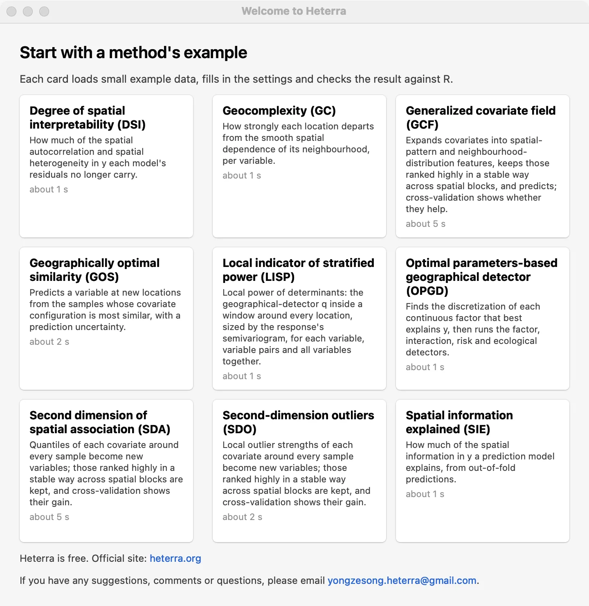
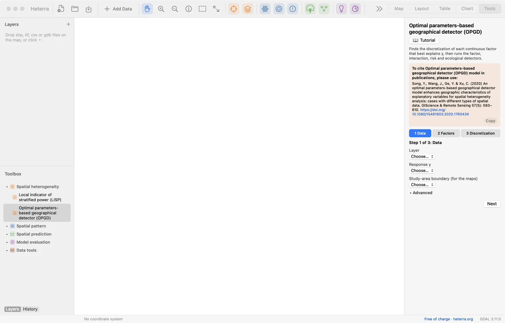
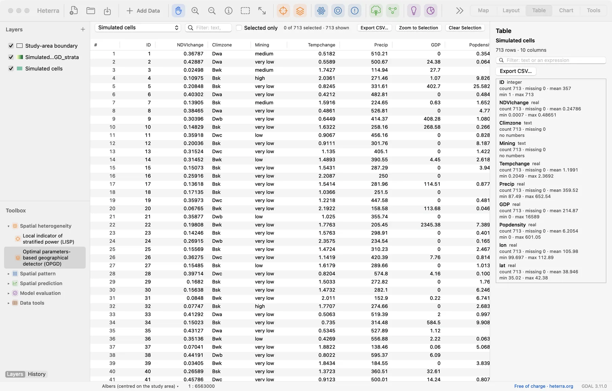
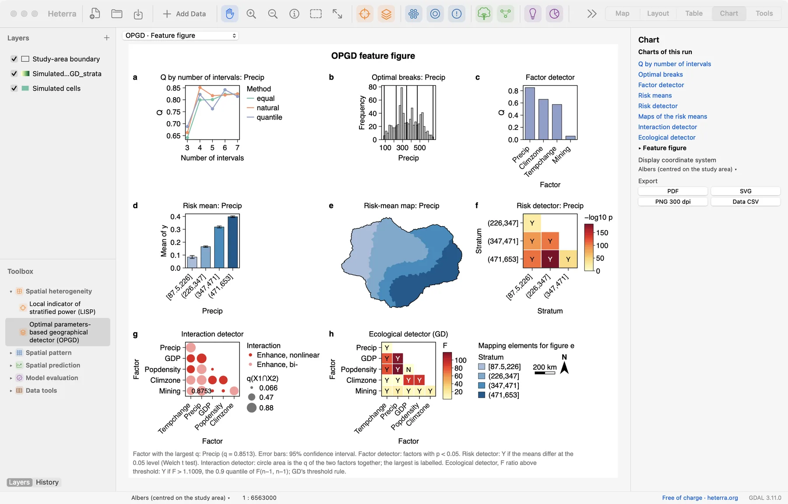
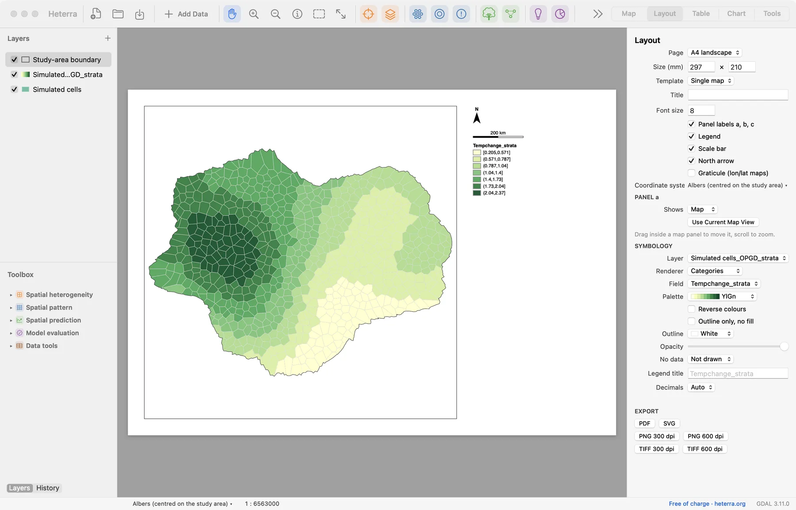

Heterra guide · Part 1
Getting started with Heterra
From your own data to figures and tables you can put in a paper, one method at a time.
Who it is for
Researchers and students who have spatial data and want to run a method on it without writing code.What you need
Heterra 1.6.0 on a Mac or a Windows PC, and about 20 minutes for this part. Each method chapter takes 20 to 40 minutes.What you get
For each method: what it answers, the steps in Heterra, how to read and report every result, and exercises.How this guide works
The guide has five parts. This part introduces the software. Parts 2 to 5 are the four groups of methods; each method is one chapter, and every chapter has the same four sections:
| Section | What you find there |
|---|---|
| 1 The method | The question the method answers, the idea behind it in plain words, and when to use it. |
| 2 In Heterra | How to prepare your data, the example step by step with screenshots, and what changes with your own data. |
| 3 Reading the results | Every figure and table: what it shows, how to read it, and a model sentence for a paper. |
| 4 Exercises | Short tasks on the example and on your own data, with answers. |
Every chapter uses the example that ships with Heterra, so you can repeat each step and compare your screen with the pictures. Several examples use simulated data: their numbers illustrate the tool and do not describe a real study.
Which method answers my question?
| Your question | Method | Chapter |
|---|---|---|
| Which factors explain the spatial pattern of my variable, and how do they interact? | OPGD | 1 |
| Where does each variable explain the response, and how strongly at each place? | LISP | 2 |
| Where does a variable break the smooth pattern of its surroundings? | GC | 3 |
| Do the values of covariates around a sample, not only at it, improve a prediction? | SDA | 4 |
| Do local anomalies of covariates around a sample improve a prediction? | SDO | 5 |
| Can spatial-pattern and neighbourhood features of covariates improve a prediction map? | GCF | 6 |
| What is the value at unsampled places, and how uncertain is it? | GOS | 7 |
| How much of the spatial structure of the data have my models absorbed? | DSI | 8 |
| How much of the spatial information in the data do my prediction models explain? | SIE | 9 |
Part 2 · Spatial heterogeneity
OPGD · LISPWhat explains a spatial pattern, over the whole area and at each location.Part 3 · Spatial pattern
GC · SDA · SDOComplexity, neighbourhood quantiles and local outliers as new information.Part 4 · Spatial prediction
GCF · GOSPrediction maps with cross-validation and uncertainty.Part 5 · Model evaluation
DSI · SIEJudge models by the spatial structure they explain, beside their accuracy.Install Heterra
Heterra is free. Download it from the home page.
- Mac (Apple silicon, macOS 13 or later): open the .dmg and drag Heterra to Applications. macOS blocks it the first time: open System Settings → Privacy & Security and choose Open Anyway.
- Windows 10 or 11 (64-bit): double-click the installer. If "Windows protected your PC" appears, click More info, then Run anyway.
No R or Python is needed.
Languages
The interface of Heterra is available in eight languages:
| English | 简体中文 Simplified Chinese | 繁體中文 Traditional Chinese | Français French |
| Español Spanish | Português Portuguese (Brazil) | 日本語 Japanese | 한국어 Korean |
Heterra asks for the language in the welcome window of the first start. If you do not choose, it follows the language of your system, and uses English when the system's language is not one of the eight. To change it later, open Settings → Language, choose and confirm: Heterra restarts in the new language, so save your project first. This guide shows the English interface. Reports are always written in English.

The window

| Where | What it is for |
|---|---|
| Toolbar, left | New, open and save a project; Add Data; the map tools (pan, zoom, identify, select). |
| Toolbar, coloured buttons | The nine methods, in the colours of their groups. The same tools are in the Toolbox. |
| Toolbar, right | The five pages: Map, Layout, Table, Chart, Tools. |
| Layers / History | The layers of the project. History lists every run, so earlier results can be opened again. |
| Toolbox | The methods in four groups, and the data tools. |
| Panel, right | What the page needs: a tool's steps, a layer's style, a chart's export buttons. |
Add your data
Click Add Data, or drop files on the map. Heterra opens Shapefile, GeoPackage, GeoJSON, GeoTIFF, File Geodatabase (.gdb folder) and CSV with coordinate columns.
A table for the methods
Every method works on an attribute table: one row per location (a point, a polygon or a grid cell), one column per variable. Before you start, check three things:
- Numbers are numbers. A column with a stray text cell is read as text, and Heterra tells you which cell. Missing values are empty cells.
- Coordinates are known. For a CSV, choose the two coordinate columns and their coordinate system when you add it (for longitude and latitude: EPSG:4326). Some methods need longitude and latitude, others projected coordinates; each chapter says which.
- Names are simple. Column names and category values are best written with English letters, digits and underscores. This is a recommendation: Heterra also reads other characters.
Data tools
The Toolbox's Data tools prepare a layer without leaving Heterra:
| Tool | Use |
|---|---|
| CSV → points | Saves a CSV with coordinate columns as a point layer. |
| Reproject | Transforms a vector layer to another coordinate system. |
| Raster → grid table | Turns rasters into a point layer of cell centres, one field per band: the grid that the prediction methods take. |
| Join | Adds the fields of a table to a layer where the key fields are equal. |
| Field calculator | Computes a new numeric field from an expression, for example a log transform. |
| Clip | Keeps what lies inside an extent or inside the polygons of another layer. |
Look at the data first
Select a layer to style it in the panel: single symbol, categories or graduated colours, with RColorBrewer palettes. The Table page shows the attribute table with a summary of every field (count, missing, mean, minimum and maximum), a quick way to find a column that was read as text or has missing values.

Run a method
Every method is run the same way:
- Open the tool from the Toolbox or the toolbar. Its panel shows a short description and the reference to cite.
- Try the example first. Click Tutorial, then Load Example: the data are loaded and the settings filled in. Guide opens the example's own notes.
- Go through the steps. The panel is divided into numbered steps. Next moves on; Run appears only at the steps that compute. Settings that rarely change are under Advanced.
- Run. If a setting is still missing, a line beside the button says which one and at which step.
- Read the results. The main figure opens on the Chart page; the panel lists all outputs.
With your own data the steps are the same: add your layer, open the tool (without the tutorial) and choose your layer and fields in step 1.
Checked against RAfter an example runs, a green line in the panel says whether the results match the reference results computed with the method's R implementation. It is a check of the software on your computer; it appears for the examples only.
Find the results

A run gives three kinds of results:
- Figures, on the Chart page. The menu above the figure and the list in the panel switch between them. Most methods have a main figure that opens first.
- Tables, on the Table page.
- New fields or layers, on the Map page: for example the strata of OPGD or a prediction over a grid. They are layers like any other and can be styled and exported.
In a tool's panel, Outputs lists them all; entries that begin with "Figure" or "Table" open that figure or table. Under Results, the panel also writes a few sentences about the run in plain words; a click on a sentence opens the figure it speaks about.
Every run is kept in History (beside Layers), with its settings. Run a method twice with different settings and both results stay available.
Export for a paper
| What | Where | Formats |
|---|---|---|
| A figure | Chart page → Export | PDF and SVG (vector), PNG at 300 dpi, and Data CSV: the numbers behind the figure |
| A table | Table page → Export CSV | CSV |
| A map or a page of maps and charts | Layout page → Export | PDF, SVG, PNG and TIFF at 300 or 600 dpi |
| A layer with its result fields | Right-click the layer → Export Layer | Shapefile, GeoPackage, GeoJSON, CSV |
| A report of a run | The tool's panel → Export results | DOCX, PDF, LaTeX |

Three points help when a figure goes into a manuscript:
- Prefer vector formats. PDF and SVG stay sharp at any size and can be edited in a drawing program. Use PNG or TIFF when the journal asks for images.
- Keep the data. Save the Data CSV with each figure: reviewers ask for numbers, and you may want to redraw a figure in your own style.
- Use the report as a draft. The report of a run has four parts: method, analysis steps, results (with numbered figures and tables and a sentence of interpretation each), and references. It is a starting text to edit, not a finished section.
Save the project (a .heterra folder) to keep the layers, runs and results together. An unsaved project lives in a temporary folder.
Report and cite
When you write up a result, give the reader what they need to repeat it:
- the data: number of units, the response and the variables;
- the settings you changed from the defaults (every chapter names the ones that matter);
- the software and its version, and the paper of the method.
"The analysis was run in Heterra 1.6.0 (Song 2026), which implements the optimal parameters-based geographical detector (Song et al. 2020)."
Cite the software as: Song, Y. (2026) Heterra: Advanced spatial analysis [software]. https://heterra.org
Each tool's panel shows the full reference of its method with a Copy button, and each chapter of this guide ends with the references.
Exercises
Exercise 1Explore
Open the OPGD tutorial and click Load Example, but do not run it. On the Table page, find the field with the largest maximum. How many rows and fields does the layer have?
Answer
GDP has the largest maximum (16,589). The layer "Simulated cells" has 713 rows and 10 fields.
Exercise 2Export
Run the OPGD example. Export the feature figure as PDF and its Data CSV. Then open the Factor detector figure from the Outputs list and export it as PNG.
Checklist
You should have three files. Open the PDF and zoom in: the text stays sharp, because it is a vector file. The CSV holds one block of rows per panel of the figure.
Exercise 3Your data
Add one of your own layers. Check on the Table page that every variable you plan to use is numeric and note how many values are missing. Style the layer by your response variable with graduated colours.
Checklist
If a numeric column was read as text, correct the cell Heterra names and add the file again. If the layer has no coordinate system, give it one when adding it, or the map and the distance-based methods cannot place it.
Heterra guide, for version 1.6.0. © 2026 Yongze Song. Documentation and tutorial data: CC BY 4.0.